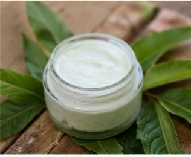
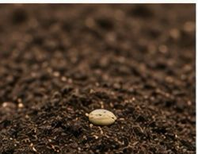
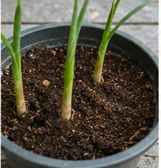

REPRODUCCION DE PLANTA Y USO
Jengibre: usos y reproducción
El Jengibre es una planta medicinal y culinaria muy apreciada en todo el mundo por su aroma, sabor picante y propiedades beneficiosas para la salud. Su rizoma —la parte subterránea del tallo— es la porción más utilizada tanto en gastronomía como en medicina natural.
¿Qué es el jengibre?
El jengibre pertenece a la familia Zingiberaceae y es originario del sudeste asiático. Se cultiva en regiones tropicales y subtropicales debido a que necesita climas cálidos y húmedos para desarrollarse adecuadamente.
Beneficios medicinales
El jengibre es ampliamente reconocido por sus propiedades terapéuticas.
La planta puede alcanzar entre 60 y 120 cm de altura y posee hojas alargadas de color verde intenso. Su parte más importante es el rizoma, de aspecto nudoso y color beige por fuera, amarillo claro por dentro.
Usos del jengibre
Uso culinario
El jengibre es muy utilizado en la cocina por su sabor fresco, ligeramente picante y aromático.
Se utiliza para:
-Condimentar carnes, pescados y mariscos.
-Preparar sopas y caldos.
-Aromatizar postres y galletas.
-Elaborar bebidas como té, jugos y licuados.
Ejemplos de alimentos con jengibre
-Té de jengibre.
-Galletas de jengibre.
-Batidos naturales
-Uso medicinal tradicional.
El jengibre ha sido utilizado en la medicina natural debido a sus compuestos activos, como el gingerol.
-Beneficios más conocidos:
-Ayuda a aliviar náuseas y mareos.
-Puede mejorar la digestión.
-Tiene propiedades antiinflamatorias.
-Ayuda a reducir síntomas del resfriado.
-Puede contribuir al alivio de dolores musculares.
Uso cosmético.
El jengibre también se usa en productos de belleza y cuidado personal.
-Aplicaciones comunes:
-Champús y tratamientos capilares.
-Cremas corporales.
-Aceites esenciales para masajes.
-Productos aromáticos y relajantes.
-Refuerzo del sistema inmunológico
Contiene antioxidantes que ayudan a combatir enfermedades.
Es común en remedios para resfriados y gripe.
Uso industrial
En la industria alimentaria y farmacéutica se utiliza para:
-Fabricar bebidas.
-Elaborar suplementos naturales.
-Producir aceites esenciales.
-Crear saborizantes y extractos.
-Favorece la circulación sanguínea.
Importancia del jengibre.
El jengibre es valorado por:
Su uso gastronómico mundial.
Sus propiedades medicinales naturales.
Su fácil cultivo en climas tropicales y subtropicales.
Su importancia económica en la agricultura y la industria alimentaria.
 |
|
 |
|
CARRUSEL DE FOTOGRAFÍAS

 2026
2026